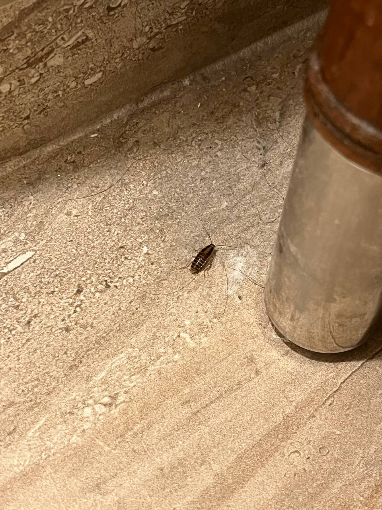

Defcon 31
Overview
Should I really explain what is Defcon ? Really ? You didn't know it was one of the most important cybersecurity conference happening in Las Vegas every years where almost 40 000 people joined themselves on a common passion ? Now you do !
This year, I have been trusted by the Defcon committee to create and run a workshop on malware development. The workshop only took me 4 hours, so I had plenty of time left to browse everything the Defcon has to offer (and is freaking giant !).
This small post aims to highlight my personal point of view on this experience, and help Defcon newbie, like me, to take the plunge and join the Defcon family.
The Defcon
Defcon is huge, you have a lot of things to do. Even if you are not in cybersecurity, you will surely find something to do and learn a lot of things !
Talks, Wokshops, Villages, DemoLabs
At the Defcon, you will be able to go to talks, villages and demolabs. Each one is different and you should go to each of them cause they are complementary.
TLTR: You can go to any talk but try to go to village and workshop on subject you want to discover
Talks
The talks are the main event at Defcon. The format depends on the speaker, but it is usually 30-45 minutes long where the speaker(s) will talk about a specific technical subject.
Even if you do not have any knowledge on the subject, feel free to go to any talk, usually speaker re-explain basic concepts in order to allow anyone to follow their talk.
While 45 minutes is not enough to make you an expert on a given subject, it will help you to understand and discover new subjects, so feel free to go to any talk even if you are a newbie on the subject.
For example, I went to some ICS talks while I have hardly any knowledge about ICS technologies but it helps me to discover new concepts and open my mind on the basics of ICS pentests.
Exploiting OPC-UA in Every Possible Way
What I liked about the talks I went to is that whatever I knew the subject or not, it always shows me new ways to approach cybersecurity problems and the different way of looking at things when I do some cybersecurity research and this is what is wonderful at Defcon. It may be the best place to brainstorm and discover new way of tackling problems.
For example, the following talk NoFilter - Abusing Windows Filtering Platform for Privilege Escalation give me ideas for my next research on Malware Development and how I could overcome different difficulties whome I meet regularly.
Workshops
TLTR: You do things but you must register in advance. Depending on the level of preparation, it can be a top or a flop, but always interesting.
Respect your instructor and the work they commited in their workshop by following their instruction and prerequisite.
Workshops are the most time-consuming activities in Defcon but the most rewarding.
While talks usually take 45 minutes, workshops can take up to 4 hours but the goals are different.
In the workshops you will do things by yourself instead of looking at someone explaining obscure things without being able to ask a lot of questions and put explained concepts in practice.
For example, if you go to a malware development workshop you will likely need to develop a malware by yourself (using pre-defined activities) and you will be able to interact with the instructor if something is not well understood.
Workshops are usually interesting to discover a subject and are, I think, the best way to dive into a specific topic.
If you already master a subject, be sure that the workshops you choose are adapted to your technical level or you could waste 4 hours. If you are an expert on the subject, you will likely don't learn anything new. Likewise, if you are a newbie and go to an advanced Workshop, you will be lost and it will be hard to learn anything.
Important point, you must sign up to the workshops ! Before the Defcon, you must register through EventBride to get your place to the workshop you want. In less than 30 minutes, all places are gone...
As a student
The most important rules when you go to a workshop are the following ones:
TLTR: Don't be too lazy to read.
If your workshop instructor took time to prepare some prerequisites, read them and make sure to comply with them. With a class of 30-40 people, he can't take time with your specific setup.
- Ensure that you have downloaded all the prerequisites for your workshop: if the workshop asks for a
Windows OS, install aWindowssystem, don't come with aMACor aKali. If you think you will gain Internet points because you are using an obscure OS don't. Use theVMgiven by the instructor. - Ensure that your technical level is coherent with the one asked by the workshop. If your technical level is too high, you will be bored, on the other hand, if your technical level on the subject is too low, you will be lost...
- Do not expect the workshop instructor to help you deploy your personal setup if a predefined setup has been sent through an
OVA. With a class of 30 persons, it is not possible to help everyone with their specificities - Come with a freaking computer ! (not a joke, some people come to
Defconworkshop without a computer.... Bru, it's like going to a third date without a condom...)
These rules are really important cause it could ruin your workshop experience and impact other participant as the instructor will likely spend time helping you to debug instead of going on it is presentation.
For example, at my workshop, 33% of people didn't bother to read and install the technical prerequisite pior to the workshop leading to a waste of time on debugging (I'm not judging as I am also the kind of person coming with my hand in my pockets).
Likewise, some trouble can be inherent to the instructor, if you go to a workshop using cloud technology and the Defcon WIFI crashed, you will not be able to do anything on the workshop. In this case, don't be angry against the instructor, he surely is as pissed as you are (yep, it happened to me and some of my colleagues, nothing is worst than this...).
In a nutshell: be a human being.
As an instructor
TLTR: Be prepared to anything when you build your workshop. Your workshop will never be as you expected.
If you want to do a workshop next year, be prepared to any scenario. You should prepare activities to do when Wifi does not work, when people do not install your prerequisite, when 75% of your attendant did not match the technical prerequisite or if a freaking comet destroyed the earth 5 minutes before your workshop.
BE PREPARED TO ANY SCENARIO because the only one you didn't think about will happened. In France, it is called La loi de l'emmerdement maximal (Murphy's law).
In this, I think Workshop is the most time-consuming activity to prepare but can also be the most rewarding.
Villages
Villages are some specific areas in Defcon focus on a specific subject.
The following villages were present at Defcon 31:
RedTeam VillageCloud VillagePhysical Intrusion VillageOSINT VillageMisinformation VillageAppSec VillageICS VillageBiohacking VillageCar hacking VillageAerospace VillageHardware hacking Village- And some other I forgot
Each village is specialized in a specific subject where you will find specific activities, workshop, demo and talks related to the subject.
Some villages can be accessed quite easily, but the hyped one such as the cloud and RedTeam are not accessible to everyone. You will have to come early in the morning in order to sign up to the different activities.
For the RedTeam village, I had to wait 1 hour in the morning to be able to access to a single 45 minutes’ talk.
My advice is to not go on villages you are specialized on. If you spend your day doing RedTeam, you will likely not learn a lot of new stuff on the RedTeam village. But it is still a nice opportunity to be reassured on your technical level.
This advice is quite valid for anything at
Defcon. Do not expect to learn new things on the subject you already mastered but use the opportunities to learn new things on subject you never learned.
On my side, I spent most of my time on the ICS Village cause it is a subject I never really wanted to dig off and thought it was a nice opportunity to dive into.
Demolabs
Not so much to say about it as I didn't go to any of it.
DemoLabs are short presentation on a specific tools. It is usually new tools with wonderful features.
Live the Defcon
Ceasar forum
The Ceasar Forum (which is not the Ceasar Palace Hotel) is the main Defcon place.
If you didn't get your badge online, you will need to get here at the beginning of the event in order to buy your badge ($440 in cash for Defcon 31).
All the Defcon talks take place here on one of the differents tracks (a track is only a specific room).
Likewise, the Demolabs, are hosted in the Ceasar Forum.
Finally, some Villages are hosted at the Ceasar Forum. If it is the first time you come to Defcon you must definitely go here first. The majority of the content is displayed at the Ceasar Forum.
The most important : Merchandizing. If you want some Defcon goodies (hat, shirt, bags), you will be able to find it here but be prepared to wait a lot of time: The first day, at 9h30, there was a 4-5h queue. Nice thing to know is that badge does not seems mandatory to buy merchandazing. So it could be interesting to go to the merchandizing before buying your badge.
The Flammingo
The Flammingo hosted the different workshop as well as some Villages such as the RedTeam village or the Cloud Village.
The Defcon is dangerous cause everyone wants to hack you
Bru, I will not spend a lot of time on this.
Hackers coming to Defcon are usually not malicious. At most they are pranksters. If you lock your computer and don't click to anything suspicious, you should be ok. The most dangerous place must be the restrooms because of the Vegas high-fat diet...
Yes, some people on Twitter keeps saying you need a burner phone, computer and underwear... You will also be able to make your own tinfoil hat in the Defcon chill room if you think you are interesting enough that anyone would trash a 0-day to hack you.
My Workshop
One of my year goals was to present some subject at different conferences including Defcon. While being accepted for a talk can be challenging, Workshop seemed to be the most convenient way to get this experience.
Subject
The workshop subject was malware development. The goal was to start with a basic process injection malware and understand how it works through the use of a debugger and sysinternals all along the way.
Then, an EDR is used to understand the IOC detected by the blue team and how it could be possible to bypass them.
So the workshop was based on an iterative way to develop malware, understanding the IOC to be able to bypass them.
For that, I created several codes that participant could arrange to create the malware with the different techniques explained in the theoretical part right before.
Troubles
I spent a lot of time developing each code snippet and make them accessible by any person with basic C and Windows knowledge.
Likewise, I spent a lot of time to design a VM that will be easily embedded in a an EDR fleet without needing additional actions by the participants.
However, it looks like that participants usually forget to download and install the prerequisite which leads to a shift in the planning. But I cannot put all the problems on the participant backs.
While the code seems to be freestanding for me, it seems that it was too much to handle for anyone discovering the subject. Indeed, even if all the code has been already developed, it is too much information to be processed at once. Thus participants were kinda lost during the hands-on parts and this is fully on me.
Finally, the main problem is the Wifi, during the Workshop, the Defcon WIFI failed. Thus every part related to the use of MDE EDR (a cloud solution) could not be done. Likewise, if any tool was missing (such as python) it was not possible for the participant to easily download them.
All these troubles ended with me doing the presentation and explaining the different concepts instead of the participant learning them by themselves.
This was for me the most frustrating part: I spent several weeks trying to do something freestanding that anyone could do by just reading the code and could enjoy doing by themselves and finally, they had not been able to write anything...
The nice part is that cause the code was freestanding, they still can use it at home and take time to understand things by themselves but it kinda broke the idea of a Workshop...
For my next Workshop
While the workshop didn't work as I dreamed of, I will likely try to give another one next year. Here is the conclusion of this first experience to avoid making the same mistake I did.
Don't do something to long
When I present a subject, I always want to spend time on every aspect of the subject. While it can be interesting, it makes the workshop too complex and hard to follow.
If you want to make a workshop, try to focus on only a single subject or it will be too long or too dense to be absorbed in 4 hours.
Be (more) prepared
I always say it several times now, but for the next time I will take any possible scenario into account. This time I hopped that everything would be flawless (ahah, rookie move).
For next time, I will prepare additional activities that can be replaced depending on the situation (live demo if wifi failed, cloud instances if no-one download their VM etc...)
Change the way I deploy the setup
While VM is nice cause everyone will have the same setup, depending on the OS the participant uses (yes, even if a Windows OS is asked, be sure that 33% will come with a MAC, ArchLinux, Kali etc...), the VM deployment can fail (espacially on MAC).
For the next time, I will try to use cloud instances with web interface (Guacamole for example). Therefore, I will be sure that everyone will be able to access to a VM even if they come with an iPad.
4G modem as backup
As you can see, I have Wifi PTSD...
Next year I will invest in a 4G modem to ensure that it will be possible to access to Internet whathever happen to the Defcon infrastructure.
Las Vegas
The Defcon takes place at Las Vegas. So once you have decided to take your ticket for the Defcon, you still have to handle a week (or 3-4 days) in Vegas.
Sleep
If you are a speaker, this is handled by the Defcon for you. You will have a 4-night stay fully paid by Defcon. This year, for example, it was at the Flammingo. Otherwise, you are by yourself.
The majority of Vegas hotels are quite kitsch and/or old-fashioned. But some are better than others. Here is my personal opinion on the hotels I used or the feedback from my colleagues.
Horseshoe
TLTR : Nice hotel if you only want to sleep and go to the casino. You should not be afraid by unsterilized rooms.
The Horshoes hotel is on the strip, right in front of the Flammingo hotel where the Defcon workshops and villages have been dispensed. This is I think the only benefits for this hotel.
The room I got was quite old but the bedding and the shower were ok. The complex offers a small fitness room and a pool. The pool is large and not so noisy regarding to other hotels but it is closed at 5pm. The fitness room contains the main equipment to avoid gaining 50Kg of fat during your stay and close at 8pm.
However, the cleaning service leaves much to be desired, I found trash in front of my door and I even get several unwanted and unexpected flatmates:

The Flammingo
TLTR : Closed to
Defconbut old room, really noisy and they keep exotic animals against their will
The Defcon paid me 4 nights at the Flammingo.
This hotel is used to host a workshop and some villages and it is really closed to the Ceasar Forum so it is perfect if you want to be closed to the Defcon events.
However, the room I got was really old and the bathroom is antique but the bedding was really comfy. Moreover, it starts to be really noisy from 2PM to 6PM due to the pool parties. So if you want to relax in your bedroom, it may not be the best hotel.
The no part for me is the fact that they keep exotic animals in their garden for entertainment but it is a personal point of view... I would have wanted to know that prior to accepting the reservation in this hotel.
Tuscanny
I didn't go here, but I hear it is better than the Horseshoe and Flammingo
Luxor
You sleep in a freaking pyramid !
Didn't go thought but the Titanic exposition is interesting !
Eat
These are the few restaurants I went during my stay.
Yard House (LINQ promenade)
Restaurant with a lot of choices from standard burgers to healthy poke.
Everything I ate here was good.
Pub 365 (Tuscanny - Strip)
Everything is good but they must work on the meal size. One meal could satisfy 3 people.
The tacos are spicy but really good. The Licorn Burger is freaking giant and do not take the sammies if you think it will be healthier: it is not.
The beer menu is impressive even if they do not have their 365 beers in stock you will likely find the hopped beverage you want here.
Alexa's (Strip)
The best breakfast I got during my stay in Vegas. Not too expensive, and meals are good (do not take the meat omelet and you should be ok).
If you want to eat a classic American breakfast, you should be happy with this place.
Maxie's (LINQ promenade)
A place to make your calories go up without getting your wallet going down.
Not good, and not bad for a breakfast, but it was the only meal I ate in the day.
Sushi Burritos (LINQ promenade)
Maybe the most healthy meal I ate during my stay in Vegas.
It is just a giant maki or a standard pokeball.
Trattoria Reggiano Italian Restaurant (Eataly - Strip)
Italian restaurant in the Eataly foodcourt. A little bit expensive but the atmosphere is nice and the meals are good.
It is possible to take some drink at the Vine bar before going to the restaurant.
Canonita (Venitian)
A mexican restaurant really good in the Venitian casino.
Took 2 picked of Magarita, no regrets.
Drink
Brewdog
This is a rooftop bar closed to the MGM Grand. You will have a beautiful view on all the strip while drinking your favorite beer.
It also offers beer flight if you prefer to test several beers.
However, you can only enjoy the view if you also have your dinner here. Otherwise, you will have to drink at the bar which does not offer a direct view on the strip.
Eataly - Strip
If you are more in wine than beer, you still can enjoy your glass of vine after a day of conferences at Eataly foodcourt.
You can also take a vine flight to test three different types of vine. It is not cheap but it change from standard bar.